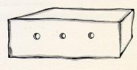
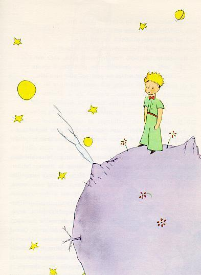

I ask the indulgence of the children who may read this book for dedicating it to a grown-up. I have a serious reason: he is the best friend I have in the world. I have another reason: this grown-up understands everything, even books about children. I have a third reason: he lives in France where he is hungry and cold. He needs cheering up. If all these reasons are not enough, I will dedicate the book to the child from whom this grown-up grew. All grown-ups were once children - although few of them remember it. And so I correct my dedication:
Once when I was six years old I saw a magnificent picture in a book, called True Stories from Nature, about the primeval forest. It was a picture of a boa constrictor in the act of swallowing an animal. Here is a copy of the drawing.

In the book it said: "Boa constrictors swallow their prey whole, without chewing it. After that they are not able to move, and they sleep through the six months that they need for digestion."
I pondered deeply, then, over the adventures of the jungle. And after some work with a colored pencil I succeeded in making my first drawing. My Drawing Number One. It looked something like this:

I showed my masterpiece to the grown-ups, and asked them whether the drawing frightened them.
But they answered: "Frighten? Why should any one be frightened by a hat?"
My drawing was not a picture of a hat. It was a picture of a boa constrictor digesting an elephant. But since the grown-ups were not able to understand it, I made another drawing: I drew the inside of a boa constrictor, so that the grown-ups could see it clearly. They always need to have things explained. My Drawing Number Two looked like this:

The grown-ups' response, this time, was to advise me to lay aside my drawings of boa constrictors, whether from the inside or the outside, and devote myself instead to geography, history, arithmetic, and grammar. That is why, at the age of six, I gave up what might have been a magnificent career as a painter. I had been disheartened by the failure of my Drawing Number One and my Drawing Number Two. Grown-ups never understand anything by themselves, and it is tiresome for children to be always and forever explaining things to them.
So then I chose another profession, and learned to pilot airplanes. I have flown a little over all parts of the world; and it is true that geography has been very useful to me. At a glance I can distinguish China from Arizona. If one gets lost in the night, such knowledge is valuable.
In the course of this life I have had a great many encounters with a great many people who have been concerned with matters of consequence. I have lived a great deal among grown-ups. I have seen them intimately, close at hand. And that hasn't much improved my opinion of them.
Whenever I met one of them who seemed to me at all clear-sighted, I tried the experiment of showing him my Drawing Number One, which I have always kept. I would try to find out, so, if this was a person of true understanding. But, whoever it was, he, or she, would always say:
"That is a hat."
Then I would never talk to that person about boa constrictors, or primeval forests, or stars. I would bring myself down to his level. I would talk to him about bridge, and golf, and politics, and neckties. And the grown-up would be greatly pleased to have met such a sensible man.
So I lived my life alone, without anyone that I could really talk to, until I had an accident with my plane in the Desert of Sahara, six years ago. Something was broken in my engine. And as I had with me neither a mechanic nor any passengers, I set myself to attempt the difficult repairs all alone. It was a question of life or death for me: I had scarcely enough drinking water to last a week.
The first night, then, I went to sleep on the sand, a thousand miles from any human habitation. I was more isolated than a shipwrecked sailor on a raft in the middle of the ocean. Thus you can imagine my amazement, at sunrise, when I was awakened by an odd little voice. It said:
"If you please--draw me a sheep!"
"What!"
"Draw me a sheep!"
I jumped to my feet, completely thunderstruck. I blinked my eyes hard. I looked carefully all around me. And I saw a most extraordinary small person, who stood there examining me with great seriousness. Here you may see the best portrait that, later, I was able to make of him. But my drawing is certainly very much less charming than its model.

That, however, is not my fault. The grown-ups discouraged me in my painter's career when I was six years old, and I never learned to draw anything, except boas from the outside and boas from the inside.
Now I stared at this sudden apparition with my eyes fairly starting out of my head in astonishment. Remember, I had crashed in the desert a thousand miles from any inhabited region. And yet my little man seemed neither to be straying uncertainly among the sands, nor to be fainting from fatigue or hunger or thirst or fear. Nothing about him gave any suggestion of a child lost in the middle of the desert, a thousand miles from any human habitation. When at last I was able to speak, I said to him:
"But--what are you doing here?"
And in answer he repeated, very slowly, as if he were speaking of a matter of great consequence:
"If you please--draw me a sheep..."
When a mystery is too overpowering, one dare not disobey. Absurd as it might seem to me, a thousand miles from any human habitation and in danger of death, I took out of my pocket a sheet of paper and my fountain-pen. But then I remembered how my studies had been concentrated on geography, history, arithmetic and grammar, and I told the little chap (a little crossly, too) that I did not know how to draw. He answered me:
"That doesn't matter. Draw me a sheep..."
But I had never drawn a sheep. So I drew for him one of the two pictures I had drawn so often. It was that of the boa constrictor from the outside. And I was astounded to hear the little fellow greet it with:
No, no, no! I do not want an elephant inside a boa constrictor. A boa constrictor is a very dangerous creature, and an elephant is very cumbersome. Where I live, everything is very small. What I need is a sheep. Draw me a sheep."
So then I made a drawing.

He looked at it carefully, then he said:
"No. This sheep is already very sickly. Make me another."
So I made another drawing.

My friend smiled gently and indulgently.
"You see yourself," he said, "that this is not a sheep. This is a ram. It has horns."
So then I did my drawing over once more.
But it was rejected too, just like the others.
"This one is too old. I want a sheep that will live a long time."

By this time my patience was exhausted, because I was in a hurry to start taking my engine apart. So I tossed off this drawing.
And I threw out an explanation with it.
"This is only his box. The sheep you asked for is inside."
I was very surprised to see a light break over the face of my young judge:
"That is exactly the way I wanted it! Do you think that this sheep will have to have a great deal of grass?"
"Why?"
"Because where I live everything is very small..."
"There will surely be enough grass for him," I said. "It is a very small sheep that I have given you."
He bent his head over the drawing.
"Not so small that--Look! He has gone to sleep..."
And that is how I made the acquaintance of the little prince.
It took me a long time to learn where he came from. The little prince, who asked me so many questions, never seemed to hear the ones I asked him. It was from words dropped by chance that, little by little, everything was revealed to me.
The first time he saw my airplane, for instance (I shall not draw my airplane; that would be much too complicated for me), he asked me:

"What is that object?"
"That is not an object. It flies. It is an airplane. It is my airplane."
And I was proud to have him learn that I could fly.
He cried out, then:
"What! You dropped down from the sky?"
"Yes," I answered, modestly.
"Oh! That is funny!"
And the little prince broke into a lovely peal of laughter, which irritated me very much. I like my misfortunes to be taken seriously.
Then he added:
"So you, too, come from the sky! Which is your planet?"
At that moment I caught a gleam of light in the impenetrable mystery of his presence; and I demanded, abruptly:
"Do you come from another planet?"
But he did not reply. He tossed his head gently, without taking his eyes from my plane:
"It is true that on that you can't have come from very far away..."
And he sank into a reverie, which lasted a long time. Then, taking my sheep out of his pocket, he buried himself in the contemplation of his treasure.
You can imagine how my curiosity was aroused by this half-confidence about the "other planets." I made a great effort, therefore, to find out more on this subject.
"My little man, where do you come from? What is this 'where I live,' of which you speak? Where do you want to take your sheep?"
After a reflective silence he answered:
"The thing that is so good about the box you have given me is that at night he can use it as his house."
"That is so. And if you are good I will give you a string, too, so that you can tie him during the day, and a post to tie him to."
But the little prince seemed shocked by this offer:
"Tie him! What a queer idea!"
"But if you don't tie him," I said, "he will wander off somewhere, and get lost."
friend broke into another peal of laughter:
"But where do you think he would go?"
"Anywhere. Straight ahead of him."
Then the little prince said, earnestly:
"That doesn't matter. Where I live, everything is so small!"
And, with perhaps a hint of sadness, he added:
"Straight ahead of him, nobody can go very far..."